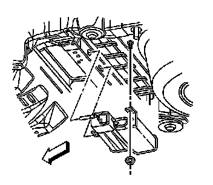

Evaporative Emission Control Canister: Service and Repair
Evaporative Emission Canister Replacement
Removal Procedure
1. Remove the rear frame. Refer to Rear Frame Replacement (Service and Repair) .

2. Disconnect the evaporative emission (EVAP) hoses from the EVAP canister.
3. Disconnect the electrical connector from the EVAP canister.

4. Remove the EVAP canister retaining nuts.
5. Complete the following in order to remove the EVAP canister:
1. Lower the rear of the canister enough to clear the 2 weld studs.
2. Slide the canister rearward from the body brace.
Installation Procedure
1. Complete the following in order to install the EVAP canister:
1. Insert the fresh air tube and tab on the canister forward into the body brace.
2. Rotate the rear of the canister up over the 2 weld studs on the floor pan.
Notice: Refer to Fastener Notice (Fastener Notice) .
2. Install the EVAP canister retaining nuts.
Tighten the EVAP canister retaining nuts to 6 N.m (53 lb in).
3. Connect the EVAP hoses to the EVAP canister.
4. Connect the electrical connector to the EVAP canister.
5. Install the rear frame. Refer to Rear Frame Replacement (Service and Repair) .